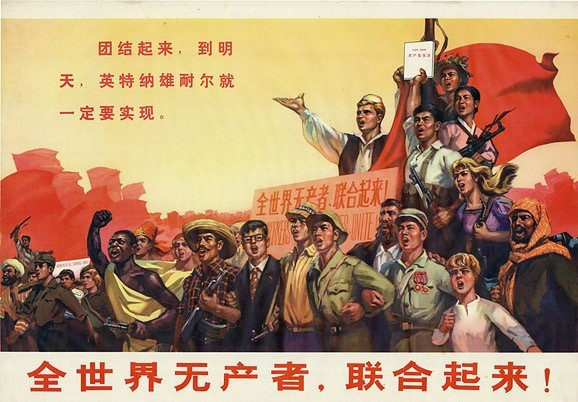

Marx is one of the founders of Marxism, the organizer and leader of the First International, and the founder
of
the Marxist political party.
马克思是马克思主义的创始人之一，第一国际的组织者和领袖，马克思主义政党的创始人。
The revolutionary mentor of the proletariat and working people all over the world, the spiritual leader of
the
proletariat, and the pioneer of the International Communist movement.
全世界无产阶级和劳动人民的革命导师，无产阶级的精神领袖，国际共产主义运动的先驱。
The Marxist doctrine co-founded by him and Engels is regarded as a theoretical weapon and a guide to action
for the
working people of the world in their struggle for the realization of socialist and communist ideals.
他和恩格斯共同创立的马克思主义学说，被认为是指引全世界劳动人民为实现社会主义和共产主义理想而进行斗争的理论武器和行动指南。
German socialist philosopher, the closest collaborator of Karl Marx in the foundation of modern
communism.
德国社会主义哲学家，卡尔·马克思在现代共产主义基础上最亲密的合作者。
He provided financial support for Karl Marx's academic research. After Marx's death, he compiled and
published Marx's
manuscripts and writings, and became the leader of the international workers' movement.
他为卡尔·马克思从事学术研究提供经济支持。马克思逝世后，将马克思遗留下的手稿、遗著整理出版，并众望所归地成为国际工人运动的领袖。
They coauthored The Communist Manifesto (1848), and Engels edited the second and third volumes of Das
Kapital after
Marx’s death.
他们合著了《共产党宣言》（1848年），恩格斯在马克思去世后编辑了《资本论》的第二卷和第三卷。
从创造者、继承者的认识成果讲,马克思主义是由马克思、恩格斯创立的，由其后继者不断丰富和发展的观点和学说的科学理论体系。
从阶级属性讲,马克思主义是关于无产阶级解放、全人类解放和每个人自由而全面发展的学说，是指引人民创造美好生活的行动指南，具有鲜明的阶级性。
从研究对象和主要内容讲,马克思主义是无产阶级的科学世界观和方法论，是关于自然、社会和人类思维发展的一般规律的学说，是关于社会主义必然代替资本主义、最终实现共产主义的学说。
三个基本组成部分---马克思主义哲学、马克思主义政治经济学和科学社会主义。
其他:还包含着如历史学、政治学、法学、文化学、新闻学、军事学等其他许多知识领域，并随着实践和科学的发展而不断丰富。
以无产阶级的解放和全人类的解放为己任，以人的自由全面发展为美好目标，以人民为中心，坚持一切为了人民，一切依靠人民全心全意为人民谋幸福。
马克思主义的基本观点是关于自然、社会和人类思维发展一般规律的科学认识，是对人类思想成果和社会实践经验的科学总结。
马克思主义基本方法是建立在辩证唯物主义和历史唯物主义世界观和方法论基础上，指导我们正确认识世界和改造世界的思想方法和工作方法。主要包括实事求是的方法、辩证分析的方法、社会基本矛盾和主要矛盾分析的方法、历史分析的方法、阶级分析的方法、群众路线的方法等。
五四运动以后,马克思主义理论开始在进步知识界中得到传播,以李大钊为代表的具有初步共产主义思想的知识分子作出了杰出的贡献。
此时的李大钊与陈独秀一起,以《新青年》为主要阵地,在社会上开始宣传马克思主义.1919年,李大钊发表了《我的马克思主义观》一文,第一次向中国人民系统地介绍了马克思主义的唯物史观、政治经济学和科学社会主义的基本观点.陈独秀也接受了马克思主义,并在上海建立了马克思主义研究会,号召青年从事“宣传运动”、“工人运动”。
在李大钊、陈独秀即著名的“南陈北李”的推动下,毛泽东、邓中夏、蔡和森、恽代英、瞿秋白、周恩来、赵世炎、董必武、陈潭秋、李达、李汉俊等一大批先进青年和具有初步共产主义思想的知识分子也分别经过各种努力,走上无产阶级革命道路,成为马克思主义者，中国第一代马克思主义者开始形成。
他们通过各种报刊纷纷向中国人民介绍马克思主义理论.1920年,进步青年陈望道翻译了《共产党宣言》,随后马克思、列宁的一些著作被陆续翻译出版,介绍到中国来。具有初步共产主义思想的青年知识分子,通过比较、思考,逐步划清了资产阶级民主主义和无产阶级社会主义、科学社会主义和其他社会主义流派的界限,并走上了马克思主义的道路。
共产主义理想是能够实现的理想，与一切空想和幻想有着本质区别。共产主义理想作为一种社会理想，是在对人类社会发展规律认识的基础上设想的社会发展目标。共产主义理想的实现是靠社会的发展和进步，靠人民群众的实践。
共产主义理想一定会实现，其依据是人类社会发展规律以及资本主义社会的基本矛盾发展。
社会主义运动的实践，特别是社会主义国家的兴起和不断发展，已经且正在用事实证明共产主义理想实现的必然性。从一定意义上讲，社会主义革命的胜利本身就是对共产主义理想可以实现的证明。
实现共产主义理想是广大人民群众的共同愿望。在历史上，人民群众对美好生活和理想社会的向往和追求源远流长，总体上说是向往和追求一个没有剥削、没有压迫的理想社会。这种愿望既来自人民群众的根本利益和需要，也来自他们对现实生活的感受。
实现共产主义，必须找到现实的阶级力量，即现代工人阶级或无产阶级。无产阶级是先进生产力的代表，深受资产阶级的剥削和压迫，为争取自身的解放进行了不懈的斗争。马克思主义政党的产生，使无产阶级有了科学的理论指导和坚强的领导核心，走上了实现自身历史使命的更加自觉的道路。
无产阶级的解放与全人类的解放是完全一致的。无产阶级特殊的社会地位和历史使命，决定了其只有解放全人类才能使自己最后得到彻底解放。争取共产主义社会制度的最终实现，不仅是无产阶级彻底解放的标志，也是全人类得到解放的根本要求和体现
当前，中国特色社会主义进入新时代。我们党对“什么是社会主义如何建设社会主义”的认识又向前推进了一步，从理论和实践结合上系统回答了“新时代坚持和发展什么样的中国特色社会主义、怎样坚持和发展中国特色社会主义”这一重大历史课题，习近平新时代中国特色社会主义思想成为指引全国人民沿着中国特色社会主义道路继续前进的重要理论基础。这为当代青年投入中华民族伟大复兴的中国梦、实现自我人生价值提供了宝贵的历史机遇。

积极投身新时代中国特色社会主义伟大事业，投身党和人民在中国特色社会主义新时代的伟大奋斗。
以勇于担当的精神，做走在新时代前列的奋进者、开拓者、奉献者.
我倒是希望终有一天，就如同所有的医生都失业，所有的监狱都拆除，所有的军队都下岗一样，马克思主义能够过时 这证明我们已经达到了那个终极的目标！